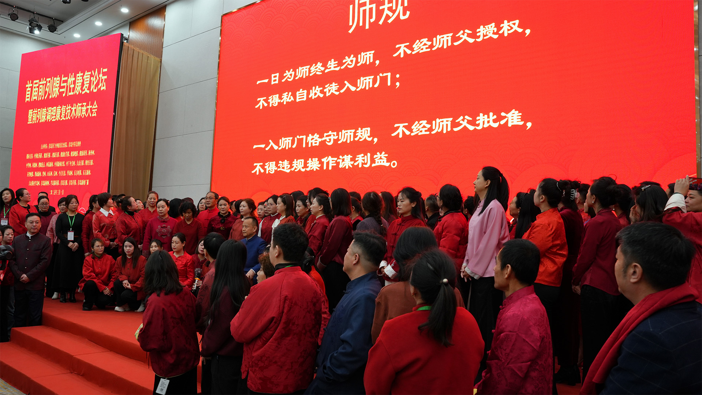

前列腺W点调理康复技术全球推广
3月1日，农历二月初二“龙抬头”，在这个寓意吉祥的日子里，
由青岛育仁中西医结合医院主办的首届前列腺与性康复论坛暨前列腺调理康复技术师承大会在青岛隆重举行。
来自全球各地的男科名家及相关专业人士300余人齐聚一堂，共同探讨前列腺与性康复领域的最新进展。
本次大会以“传承与创新”为主题，吸引了众多国内外知名专家参与。国培在线项目管理办公室副主任、健康及综合类服务中心主任李传华，中国人口文化促进会慢病防治援助工作委员会副会长李德，北京中医男科创始人齐来增，北京大学医学部博士生导师胡佩诚，青岛大学医学心理学教授毕希名，秘鲁New Life医疗中心院长、华人头条秘鲁社社长潘承遵，
马来西亚KL国际中医医院院长李大志，韩国千字文株式会社总裁朴洪英，安徽中医药大学第一附属医院男科主任戴宁，
山东中医药大学教授周永利，广州医科大学男科主任李虎，中南大学前列腺疾病研究所所长、博士生导师何乐业等嘉宾出席了会议。
上午9点，随着寓意吉祥的龙角星升起，前列腺调理康复技术的“百人拜师仪式”正式拉开帷幕。国培在线项目管理办公室副主任、健康及综合类服务中心主任李传华，
首先介绍了国家卫健委认证的前列腺调理康复技术项目。随后，项目传承人王庆华（耀堂）宣读了师训，
来自全国各地的200多名前列腺调理康复技术师承人共同宣读师规，并代表上台敬茶，场面庄严而隆重。
最后，师承人上台领取师承证书，并与传承人王耀堂先生合影留念。

拜师仪式结束后，青岛育仁中西医结合医院与国内外多家医疗机构举行了师承项目的合作签约仪式。
首先与秘鲁New Life医疗中心院长、华人作家潘承遵签约前列腺调理康复技术医疗与培训合作，
同时由王耀堂主编的《男女养生古为今用》西班牙语翻译出版签约，标志着前列腺W点调理康复技术正式进军欧洲市场。
随后与韩国千字文株式会社总裁朴洪英签约，打开了韩国市场；与马来西亚KL国际中医医院签约，开发东南亚市场；
与山东中医药大学周永利教授签约，将前列腺W点相关知识纳入大学校园。此外，还与广州医达、西安有幸医疗、
武汉阿波罗医院等多家医疗机构签约成立前列腺诊疗康复联盟，并与威海怡和、青岛悠然里社区、河北省临西县第二人民医院、
成都君沁健康管理有限公司、铁岭尚妍医院、湖南柏之雅医院中医药干预中心、山东好腺医疗等共建医疗合作单位。
最后，与青岛源略公司签约卫健委传承项目中西医结合助勃延时调理技术。此次签约仪式标志着前列腺调理康复技术在国内外市场的正式开启，
全球新蓝图已开始绘制。
当天下午，首届前列腺与性康复论坛如期举行。论坛以“前列腺与性康复诊疗新思路和新技术”为主题，围绕男性健康与性福等相关话题，
特邀各位知名专家发表了独具价值的见解。北京大学医学部博士生导师教授胡佩诚讲述了性治疗在国内外的进展现状，青岛大学医学心理学毕希名教授从中西医结合的角度解读了前列腺W点，安徽中医药大学第一附属医院男科主任戴宁分享了中医诊疗前列腺疾病的新进展，秘鲁New Life医疗中心院长潘承遵介绍了前列腺炎和前列腺增生在秘鲁的发病率及针灸治疗，中日友好医院曹兴午精液脱落细胞学(传承)发展中心学术传承人曹育爱教授分享了前列腺液相关知识与早期前列腺按摩愉悦的发现，中南大学前列腺疾病研究所所长何乐业教授讲解了前列腺疾病对男性性功能的影响，广州医科大学男科主任李虎教授以腺管疏通理论为基础发表了慢性前列腺炎治疗新模式，国家生殖健康管理师（性治疗师）项目培训导师刘默教授从心理学视角阐述了前列腺及性功能治疗，台湾广川医院性福门诊主任柯玟卉教授分享了台湾地区男女性功能障碍案例，青岛育仁中西医结合医院王耀堂院长详细介绍了他的性发明与创新之路。本次论坛学术氛围浓厚，为前列腺疾病和性功能康复诊疗提供了新思路，是男科学术界的一次盛会，不仅推动了中医男性学科的发展，也为男性学前沿知识的传播奠定了基础。
据了解，前列腺W点调理康复技术是王耀堂院长在33年男科临床经验中不断总结发现的，具有三大功效：
改善因前列腺炎和增生引起的不适症状、增强勃起功能、促进愉悦体验。2023年10月，该技术被国家卫健委确定为卫生健康技术推广传承应用项目。目前，前列腺W点调理康复技术已在医疗界得到广泛应用，并举办了近50场培训，吸引了来自韩国、泰国、马来西亚、英国、德国的学员前来学习。巴基斯坦同行、北京大学附属一院、首都医科大学等也已前来考察。学员的客户辐射到中国台湾、美国、英国、俄罗斯、澳大利亚、新加坡、匈牙利、意大利、日本等多个国家和地区。
目前，前列腺W点调理康复技术已在亚洲、欧洲获得广泛关注与认可。在土耳其第26届世界性健康大会上，该技术被确认为世界首创，
与女性G点的发现具有同等意义，值得全球推广。在迪拜第24届世界性医学大会上，王耀堂院长与各国专家深入交流，获得加拿大麦吉尔大学医学院教授、国际性医学学会主席Gerald Brock，以及韩国医学翰林院教授、亚太性学会会长文斗建等权威专家的高度肯定。在意大利第17届欧洲性学联合会上，与会专家称赞“德国人发现了女性G点，中国人发现了男性W点，这是人类性学研究史上的又一重大进步”。
2024年8月，在英国和爱尔兰举办的“第五届中欧中医药国际峰会”期间，前列腺W点成为专项讨论主题。与会专家体验后表示效果立竿见影，
多家单位表达了合作意向。在匈牙利坐诊期间，王耀堂院长因其显著疗效受到匈牙利华人头条新闻、美国新闻网、欧洲新闻网、非洲时报、葡新报等多家媒体报道。匈牙利赛格德大学朱迪特校长在了解相关技术后，对前列腺W点按摩表示惊叹，并希望尽快达成中医技术合作。
展望未来，王耀堂院长将于2025年6月带领团队出席在澳洲举办的第27届世界性健康大会，正式进军南半球市场。他在采访中表示：“
希望前列腺W点技术能为全球更多男性朋友带来健康与幸福。”
前列腺W点调理康复技术的全球推广，不仅标志着中医男性健康领域的重大突破，也为全球男性健康事业注入了新的活力。